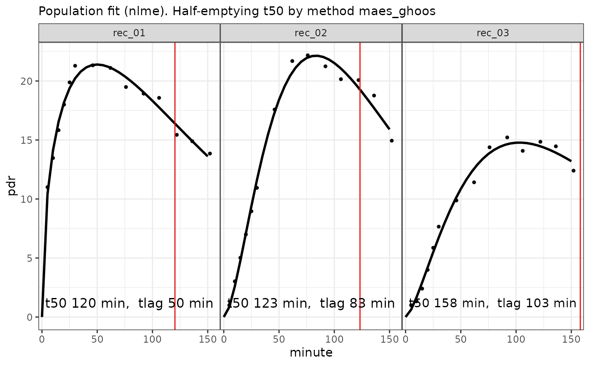

Fits exponential beta curves to 13C breath test series data using a mixed-model population approach. See https://menne-biomed.de/blog/breath-test-stan/ for a comparison between single curve, mixed-model population and Bayesian methods.
Usage
nlme_fit(
data,
dose = 100,
start = list(m = 30, k = 1/100, beta = 2),
sample_minutes = 15
)Arguments
- data
Data frame or tibble as created by
cleanup_data, with mandatory columnspatient_id, group, minuteandpdr. It is recommended to run all data throughcleanup_datato insert dummy columns forpatient_idandgroupif the data are distinct, and report an error if not. At least 2 records are required for a population fit, but 10 or more are recommended to obtain a stable result.- dose
Dose of acetate or octanoate. Currently, only one common dose for all records is supported. The dose only affects parameter
mof the fit; all important t50-parameters are unaffected by the dose.- start
Optional start values. In most case, the default values are good enough to achieve convergence, but slightly different values for
beta(between 1 and 2.5) can save a non-convergent run.- sample_minutes
When the mean sampling interval is <
sampleMinutes, data are subsampled using a spline algorithm by functionsubsample_data. See the graphical output ofplot.breathtestfitfor an example where too densely sampled data of one patients were subsampled for the fit.
Value
A list of class ("breathtestnlmefit" "breathtestfit") with elements
- coef
Estimated parameters in a key-value format with columns
patient_id, group, parameter, stat, methodandvalue. Parameterstatcurrently always has value"estimate". Confidence intervals will be added later, so do not take for granted that all parameters are estimates. Has an attribute AIC which can be retrieved by the S3-functionAIC.- data
The data effectively fitted. If points are to closely sampled in the input, e.g. with BreathId devices, data are subsampled before fitting.
Examples
d = simulate_breathtest_data(n_records = 3, noise = 0.7, seed = 4712)
data = cleanup_data(d$data)
fit = nlme_fit(data)
plot(fit) # calls plot.breathtestfit

options(digits = 3)
library(dplyr)
cf = coef(fit)
# The coefficients are in long key-value format
cf
#> # A tibble: 24 × 5
#> patient_id group parameter method value
#> <chr> <chr> <chr> <chr> <dbl>
#> 1 rec_01 A m exp_beta 44.8
#> 2 rec_01 A k exp_beta 0.00833
#> 3 rec_01 A beta exp_beta 1.52
#> 4 rec_01 A t50 bluck_coward 16.3
#> 5 rec_01 A t50 maes_ghoos 120.
#> 6 rec_01 A t50 maes_ghoos_scintigraphy 48.4
#> 7 rec_01 A tlag bluck_coward -33.3
#> 8 rec_01 A tlag maes_ghoos 49.9
#> 9 rec_02 A m exp_beta 40.0
#> 10 rec_02 A k exp_beta 0.0122
#> # ℹ 14 more rows
# AIC can be extracted
AIC(fit)
#> [1] 133
# Reformat the coefficients to wide format and compare
# with the expected coefficients from the simulation
# in d$record.
cf %>%
filter(grepl("m|k|beta", parameter )) %>%
select(-method, -group) %>%
tidyr::spread(parameter, value) %>%
inner_join(d$record, by = "patient_id") %>%
select(patient_id, m_in = m.y, m_out = m.x,
beta_in = beta.y, beta_out = beta.x,
k_in = k.y, k_out = k.x)
#> # A tibble: 3 × 7
#> patient_id m_in m_out beta_in beta_out k_in k_out
#> <chr> <dbl> <dbl> <dbl> <dbl> <dbl> <dbl>
#> 1 rec_01 44 44.8 1.46 1.52 0.00817 0.00833
#> 2 rec_02 39 40.0 2.73 2.77 0.0124 0.0122
#> 3 rec_03 42 35.2 2.20 2.55 0.00722 0.00907